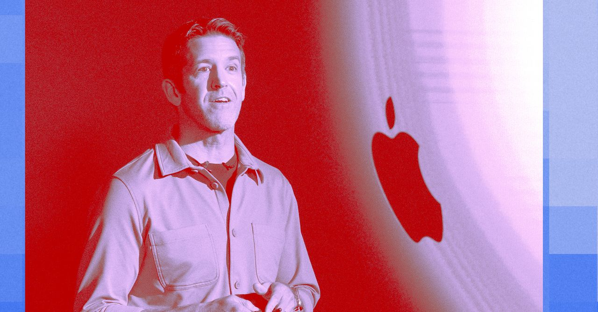
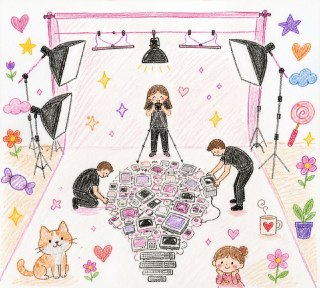
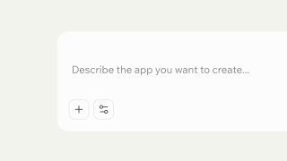
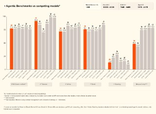
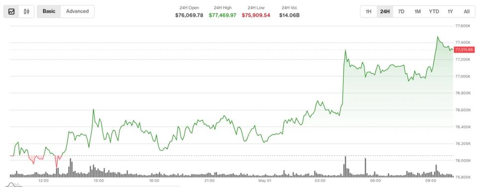
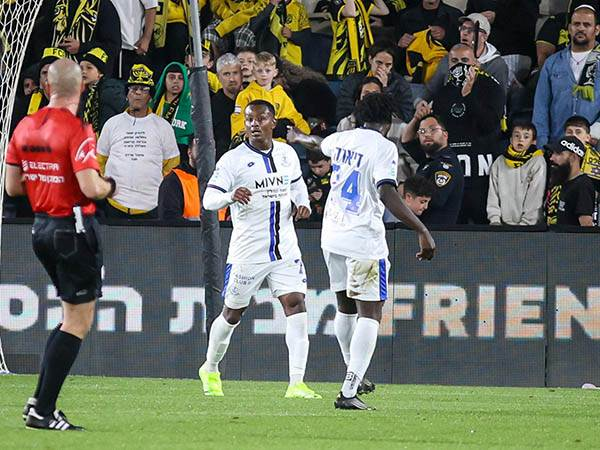

WIREDנמוכה01.05.2026, 00:00
Tim Cook was a great CEO, but he didn’t crack AI. It’s job number 1 for John Ternus.
אימות 1

Tim Cook was a great CEO, but he didn’t crack AI. It’s job number 1 for John Ternus.
Elon Musk spent three days testifying as the first witness in his trial against OpenAI.
Directions also include system instructions to act like "you have a vivid inner life.

Messages presented at trial reveal how Zilis, the mother of four of Musk’s children, acted as an intermediary between him and OpenAI.
Meta said the Kenyan workers didn't "meet our standards.
זוכרים את הביף בין הפנטגון לאנתרופיק? עכשיו מתפרסם שגוגל חתמה סופית על עסקה שמאפשרת לפנטגון להשתמש בGemini בסביבות מסווגות לכל מטרה חוקית שהממשל יראה לנכון.

תכירו את Qwen3.6-27B: המודל החדש שטורף את הקלפים! 🚀🧠 עליבאבא משחררת דגם "צפוף" (Dense) ופתוח בנפח 27B פרמטרים, והוא מוכיח שגודל זה לא הכל. מה חדש מתחת למכסה המנוע?

חיבור יכול להתבצע ממש בקלות דרך Zapier. קיים קונקטור לקלוד דסקטופ וזה פשוט מושלם! אפשר לקבל תובנות בצורה ברורה, לחבר סקילים ולייצר טקסטים ומודעות מעוצבות בקלות יתירה (עם ננו בננה) - מה שאמור להוביל ליותר המרות ויישום יעדים עסקיים - ולהצדיק את השימוש בקלוד

תי עם AI ש״נחשף״ כשעוברים על התמונה עם העכבר ויצא ממש מגניב!
סופר את האובייקטים ובודק את מיקום האלמנטים, ורק לאחר מכן מחולל את התמונה. תהליך זה מפחית משמעותית את מספר הניסיונות עד להשגת התוצאה המבוקשת. התמונות מופקות ברזולוציית 4K, והטקסט המופיע בהן קריא לחלוטין – כולל בטבלאות, אינפוגרפיקות וכיתובים של ממשקי משתמש.

חברת Cloudflare השיקה כלי חדש המיועד לבדיקת מוכנות האתרים שלכם לעבודה מול סוכני בינה מלאכותית (AI) 🤖. התהליך פשוט: יש להזין את כתובת האתר, והכלי יבצע ניתוח מקיף להערכת יכולת התקשורת של סוכני בינה מלאכותית עם האתר.

look like it was drawn by a 10-year-old child. Use random, soft, childlike lipstick colors instead. Make everything look slightly uneven, messy, and playful, like a child's drawing. Draw it as if it were on plain white paper with visible lipstick strokes and rough outlines.

ג׳מיני יכול עכשיו ליצור ולשלוח לכם קבצים להורדה, פשוט תבקשו. טוב מאוחר מלעולם לא. בינה מלאכותית בטלגרם - t.me/AI_tg_il

הסגנון שאני רוצה לקרוסלה, וגם זה הפך לסקיל, מה שאומר שמעכשיו אוכל סופסוף ליצור קרוסלות בקלות! מוזמנים להציץ:

בוטוקס, איפור ומה לא. מסכן הנסיך הניגרי הוא מאבד כל עוקץ אפשרי הפרומפט שהשתמשתי בו: Create a hairstyle analysis graphic using this portrait.

ם היסטוריית צ'אט קבועה.

הפוסט מציג טענת "חינם", אבל בלי אימות ברור מול המוצר הרשמי, ולכן צריך לראות בזה טענה שדורשת בדיקה.

הפוסט מציג טענת "חינם", אבל בלי אימות ברור מול המוצר הרשמי, ולכן צריך לראות בזה טענה שדורשת בדיקה.

חברת Mistral השיקה מודל חדש והעבירה את סוכני הבינה המלאכותית שלה לענן. Mistral Medium 3.5 הוא מודל הדגל החדש עם 128 מיליארד פרמטרים וחלון הקשר של 256 אלף טוקנים.

תוכן שיווקי:
הפוסט מציג טענת "חינם", אבל בלי אימות ברור מול המוצר הרשמי, ולכן צריך לראות בזה טענה שדורשת בדיקה.

הפוסט מציג טענת "חינם", אבל בלי אימות ברור מול המוצר הרשמי, ולכן צריך לראות בזה טענה שדורשת בדיקה.
איראנים מפרסמים סרטון המציג מתקפת-AI על אוקראינה 🇺🇦 #AI #בינהמלאכותית 📱 📱 📱

Lovable שחרה אתמול אפליקציה לנייד. 🍏 להורדה לאייפון 📱 להורדה לאנדרואיד בינה מלאכותית בטלגרם - t.me/AI_tg_il
הפוסט מציג טענת "חינם", אבל בלי אימות ברור מול המוצר הרשמי, ולכן צריך לראות בזה טענה שדורשת בדיקה.
בעקבות ההסלמה בצפון וירי הרקטות לגליל, ראש הממשלה חתם על הגבלת התקהלות של עד 200 איש בשטח פתוח באזור הר מירון. בהתאם להנחייב ולהערכות המצב של פיקוד העורף, ההילולה המסורתית לא תתקיים במתכונתה ההמונית, זאת בשל הקרבה לגבול לבנון והחשש הממשי מאירוע רב-נפגעים
תפנית מדינית: שר החוץ סער הודיע שכל פעילי המשט שסוכל על-ידי חיל הים באזור כרתים ישוחררו ביוון, אולם בהמשך הוחלט כי שניים מהם, תושבי מדינות עוינות לישראל, יובאו לחקירה בארץ. לאחד מהם מיוחס חשד לקשר עם חמאס, לשני פעילות בלתי חוקית.
סמל ליאם בן חמו הובא למנוחות בבית העלמין הצבאי בהרצליה. אימו גלית ספדה לו בבכי: "חלק מהלב שלי מתנתק, אני מחכה שתצא מלבנון, להכין לך אוכל שאתה אוהב". אביו משה התנצל: "אהבה שלי, סליחה שלא שמרתי עליך".
אתר החדשות "אקסיוס" דיווח כי מפקד סנטקום וראש המטות המשולבים הציגו בפני הנשיא אופציות לפעולה קרקעית בשטחה של איראן מזכיר המלחמה הגסת' אמר לקונגרס כי אין, להשקפתו, בעיה חוקית עם המשך הלחימה מול איראן ללא אישור הקונגרס
פיקוד העורף החמיר את ההנחיות בגבול לבנון, הגבלות גם במירון

The broader digital asset market, as measured by the CoinDesk 20 Index (CD20) , also ticked higher, up around 0.95%. Technical levels at $76,200 and $77,000 remain critical as traders balance constructive price trends against defensive derivatives positioning.
BTC rises to $77,000 after holding $75,000 support, but negative funding, flat open interest and cautious positioning signal lack of conviction.
The day ahead in crypto: May 1, 2026

Hegseth delivered the in front of the House Armed Services Committee, responding to questions about whether the US is securing a strategic advantage in technology. Hello!

Major exchanges are trying to secure access to Mythos. Artificial intelligence is a Sword of Damocles dangling over crypto — but Wall Street isn’t quailing, says Coinbase.

עדכון קצר סביב הירושלמים חגגו 1:3 על הפועל פ"ת ועקפו את הפועל באר-שבע: "המטרה עכשיו היא לשמור על המקום הראשון עד הסיום".

כוכב בית"ר ירושלים חש רגישות בשריר התאומים ועלול לא לקחת חלק במשחק מחר (20:00, טדי) מול הכחולים. אינו (אדום), קרבאלי (צהובים) יונה (פציעה) לא ישחקו
עדכון קצר סביב הקהל הירוק הגיע לדבר ולעורר את השחקנים רגע לפני הפועל פתח תקווה.

הכחולים מתוכננים למכבי חיפה. וגם: המחווה המרגשת של קבוצת הילדים
בדיקה סטטיסטית: רגע לפני הפועל פ